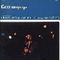
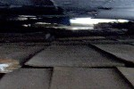
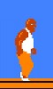
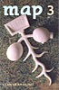

strange music page
* * * 2003.2-
-2003.3.4 ���C�^�C
#�ԕ��ǂ��ē��܂Œɂ��Ȃ�́H
����́u�قƂ�҂�����v�̃��C���͂����[�ǂ������ł��B�����܂肳��Ƃ������m�T����Ƃ��z�b�s�[�_�R����Ƃ����q�Ȃɋ��܂����B
��F�ljp/blue�����܂����A���C�����s�����Ǝv���܂��B�g�b�v�y�[�W�Łu3/9(sat)�v�Ƃ������Ă������̂͊ԈႢ�A���j�ł��ˁB
�Ƃ肠�����R�������A��ŏ����������B
���c����
-2003.2.28 ������J���r
#�ȂA�����������т��c���Ă���ł����ǁA���ѐH�����߂̃I�J�Y���������Ă��B�Ⓚ�ɔ`�����疡�t���J���r���L���āA�Ă��āA�H���āA������C���������āB
����Ȏ��͂ǁ[�ł��C�C��ł����ǁA����J�������}�L with �T���}���h�����Ă��܂����B��[���ς�i�D�C�C�ł��A�N�G���Ⴂ�܂��A����ł��C�������Ă܂��B���R�[�f�B���O����炵���̂ŁA������Ɗy���݁B
���������ߏ��̒��É���������/���̖�\500�B�ӊO�ɗǂ������B
����/�L�����o��
-2003.2.26 Getz/A.Gilberto

#�����FLIP SIDE OF THE MOON�̎R������Ƀu�c��n�����łɐ}�X�������Ƃɏオ�肱��ł�����Ƃ���������ł����Ⴂ�܂����B�e�X�g�p�^�[���̃A���o���Ƃ��̂̃e�B���p���A���C�Ƃ��������Ă��������B�l�������L�����������B�����Ȃ�s��������Ă����܂���A�ق�ƁB
�ŁA�����͏a�J��HMV��sketch show�������B�u���[��G���N�g���j�J���Ȃ��v�Ƃ����ȏ�̊��z�������o�Ă��Ȃ������ȁ[�B�p�X�B
���̋A���TSUTAYA�̘e�̃����^������CD�Z�[���Ńj���[�L�b�Y�I���U�u���b�N�Ƃ�����݂Ƃ��ɕ���Ă��uThe New Stan Getz Quartet featuring Astrud Gilberto/GETZ AU GO GO�v���Ă��܂����BGary Barton��vibraphone���ƂĂ��C�C�����B�������Arstrud Gilberto���B
��Stan Getz/One Note Samba
-2003.2.22 Mats/Morgan
#�ā[���Ă��܂����B�Ȃ�[���u�b�`�M�����Č��t���ǂ��������o���h�ł����B
�������Ή��Łu�قƂ�҂�����v�̉����G����ɂ�����܂����B�F�X���b�����Ċ�����������ْ������肵�Ă���ł����ǁA���Ȃ����̉��k�̃��C���Łu�ǁ[��[�Ȃ���ŏ���+�S�{�Ȃ�[�H�v���Ďv���Ă��̂��킩���ėǂ������ł��B�f�t�H�����̍��ɑo������Ă��Ƃ��B
�������瑤�ɂ�����������aikw����ɂ������A������ƃr�b�N���B�ǂ�������܂����ˁB
��spank happy
-2003.2.21 ��ǂ��t�@���̉��y���n����č\�z
#�����������Ă�CD���N�x���ɕ��ёւ��Ē��A�S�R�r�������Ƃ肠����1993�܂ŁB����Ȃ�B
��YMO/PUBLIC PRESSURE
-2003.2.20 RovoRovoRovovo
#���[�ƍs���Ă��܂����ANHK���C�u�r�[�g���J���^��ROVO + �L���~���B���\�M���M����NHK��������X�S�C�l�B�L���~����ċv�X�Ɍ��������APON�ȗ������j�A�p�g���C�o�[�ɏo�Ă���W�F�C�N�i�Ō�ɓ��C���h�����c�A���l�ʁj�Ɍ��������Ă��B
��rovo/imago
-2003.2.19
#�a�J�f�B�X�N���j�I���ŁA
- EVERYTHING PLAY/POSH
- ��ؑy��Y����̃G�u���V���O�E�v���C�ł�2���ځB�^�C�̉��y�����`�[�t�H����Ȃ̂ǂ��ł��C�C���炢���͓I�ȃC���X�g�|�b�v�B
- MUSICA TRANSONIC/A PILGRIMS SOLACE
- �g�c�B��+�͒[��(Acid Mother Temple)+�잊���l(HIGH RISE)�̂փ��B�T�C�P�B��u�A�Ƃ̃X�s�[�J�[����ꂽ���Ǝv�����B
- ��쌰�q/�����͖�̎���
- ��쌰�q+YMO�ł̃��C���B�_�J�d��(���{�̓d�q���y�̑n���L�̐l)���Q�����Ă܂��B���X��YMO��WHA-HA-HA�̉��̌��Ђ���������B
���[�����A����STRANGE DAYS�̍������B�Ȃ��Jane Relf�iRENAISSANCE/ILLUSION�̃{�[�J���AYardbirds��Keith Relf�̖��j�C���^�r���[������B�������������B�ȂC�G�X�̏����q�t���Ă���A�������~�ɂȂ����̂ɁB
everything play/posh
-2003.2.18 �ŁA���ǁB
#NHK���C�u�r�[�g��ROVO���������Ă��܂����̂ŁA���Ȃ����ł͂Ȃ��������ɍs�����Ƃɂ��܂����B���[��A���������������������ǂȁB
���������A����Ń��C�u�r�[�g�̃J�������}�L�܂œ���������A����S��5�A���ɂȂ�킯�ŁiMats&Morgan�̑o����Bondage Fruit�j�B�����[���A����M���������E�E�E���ăM��������ˁ[�B
����������o�y�[�W�����傱���ƍX�V�B�ق�Ƃɂ��傱���ƁB
��rovo/flage
-2003.2.17 �킪���� #2
#4000�~�Ԃ��Ă����B
���������A�l���Ă݂���NHK���C�u�r�[�g��ROVO+�L���~�������Ȃ�����̃��C������2/20�œ������������B
���C�u�r�[�g����������a�J�A�O�ꂽ��g�ˎ��B
-2003.2.16 �킪���� #1
#4000�~������B
-2003.2.15 �炪�����B
#����Ȃ킯�ŁA�����̒x���Ȃ�܂������Ǒ�R�̐l�ɗ��Ă��炢�܂����B
���[�ƁA�E�c�{�J�Y�������A���l�J�^�����A�C�N�����Asasakidelic�����Adomingo�����A��݂������������A�R���X�L�������AChel����ABROWN�����A�������A�����邳���A���X�܂���A����ۂۂ���Asatomilk����Afff����B���Ɖ��B
���[��7���16�l�B���܂����l�����x�ł����B�F�l�ŏ���ɑ�RCD�����Ă���A�����ƌ����Ԃɓ疳���Ȃ�����i���ǂ�H�����˂��j�A�X�[�p�[�}���I��4-2����5-1�ɍs�����������Ƃ��A�M�^�[�e���Ă�l��������Ƃ��A�ق�ƍ��ׂƂ��Ă��ȁB������̎����Ă���MD�Łu40�`���R���[�g�Ȃ�Ƃ��v���ĉ��ł��������A����ς�����Y��Ă�B
23���߂��ŋA�����͋A���čs���A�c��̐l�X�͍X�Ƀf�B�[�v�Ȑ��E�ցB���≹�y�̎�����Ȃ����ǁB
���[�ł��T�C�g���߂�6�N�A���[��[�I�t���ۂ��C�x���g�͎��͏��߂Ă������肵�܂��B�S�R�d��Ȃ����Đ\����Ȃ������ł����ǁA���Ă��ꂽ���ւ��肪�Ƃ��������܂����ƌ��������ł��B
���Ȃ݂ɂ��������Y�ꂽ���ցA700�~�ł��B
���Ǝ��̓��C�Â����畔���̋��Ɂu�T�U�G����N�b�L�[�v���]�����Ă܂����B�N�������Ă����낤�H
-2003.2.15 �炪����B
#����Ȏ������āA���l���炢�̐l�������������킩��Ȃ��ł����ǁA�u�قƂ�҂�����v��3/3�̃��C����DM�����ĂāB����̃��C����violin�͍֓��l�R����ł͂Ȃ��������q����݂����ł��B�x�[�X�̓o�J�{�������ɖ߂��āA�ߓ��B�Y������Q���B�n���V���[�B�N���ꏏ�ɍs���Ȃ��H
���ӁA�E�`�œ�A�u�v���O����v�A�v���Ă������l�������Ȋ����B������|�����B
���C���c/�����̒e��
-2003.2.13 no money, no music
#NHK-FM���C�u�r�[�g�̌��J�^���ɍs���Ă��܂����A�a�J��NHK��Vincent Atmicus��[�A����ς萶�̓C�C�ł��ˁB����ROVO�Ƃ��̎��̃J�������}�L��������Ƃ����ȁ[�B
NHK�̋A��́A���̂�HMV���h�~���S�����ɑ����B
���������A�v���Ԃ��HMV�ɍs������ł����ǐV���̑啔����CCCD�ɂȂ��Ă܂����B���[����A���͂ނ������甃�������Ȃ����ĂB�n�R�����炽���ł���\3000������V����CD�������S�O����̂ɁACCCD�������炩�Ȃ�̊m���Ŕ���Ȃ��Ȃ�Ǝv���܂��B���͂܂��������ǁA�{�C�łق����V����CCCD�������猙���ȁ[�A�ق�ƂɌ��B
�����/��
-2003.2.11 Juana Molina�����C�C
���Ă̂�2/9�ɍs���Ă��������G+�S�{����+����S���̊��z�Ȃ�ł����ǁB�����G����̈ӊO�Ȉ��o���̑����ɋ�������B���₷���[�ǂ������Awarehouse�̃Q�X�g�Ƃ��ŏo�Ȃ����낤���H�Ƃ��B
���ƁA�����Ƃ������Ă�������o�y�[�W�Ƃ肠�����b��A�b�v�B���[�S�R���Ȃ���ł����ǁA�������������čs���܂��B����ق�ƁA����Ȃ�ł��݂܂���B
���ƁANHK-FM���C�u�r�[�g��VINCENT ATMICUS�����������̂ōs���Ă��܂��B�Ă�[�����̌��ROVO+�L���~��ƃJ�������}�L���ꉞ�t���o�����肵�ĂāB
��vincent atmicus/jungle boogie
-2003.2.8 all's well

#�A�W�A����������Ńt�H�[�𗊂̖Y��Ăă`���[�n����l�̕��܂Ńp�N�p�N�H�ׂĂ���A�ォ�痈�₪���āE�E�E�H���߂��A���ɂ��B
������������Ƃ��̓��L�ō�������CD Journal�ɗ�؏ˎq����̉������^�Ƃ�������m���āA�����Ă��܂����B
�������`�ς��Ȃ�����A���ς�炸�C�C�ȏ����Ă�Ȃ��Ǝv���܂����B���{�̏����̃V���K�[�\���O���C�^�[�ł���Ȑl���H�L�Ȃ悤�ȁB
���ƁA�~�Øa�������̃T�C�g�Œʔ̂��Ă��A�V���N�V���C��/DESERT IN A HAND���͂��Ă܂����B�C���`�L�����ЃW���Y���b�N���Ċ����ŁA���U����O�Ƀ��C�����Ă����Ηǂ������ȁ[�ƁB
���̓��L�̓S�����A�l�^����������B
����؏ˎq/candy apple red
-2003.2.6 ah pook is here
 |
#�{�u�T�b�v�Ɏ��ĂȂ��H |
��julie dricoll/1969
-2003.2.3 ����̂ɏ����Y�ꂽ��

#���k��ONSA��map��3�����܂����B
�v�X�ɉ��y�G���Ȃ������̂́A�Ȃ�Ă�Ata tak���R�[�h�K��L���ʔ���������������BDer Plan�Ƃ�DAF�Ƃ�Holger Hiller�Ƃ��̘b��������t�c�[�ɂ���Ă���邱�̎G���͍D�������m��Ȃ��B
���̋L������ؑy��Y�Ƃ�David Grubbs�Ƃ�Peter Blegvad�Ƃ��B
��ł���Ă�ȁ[�Ǝv�����ǁA����ŃC�C�̂ł͂Ȃ����Ƃ��v���B
�S���`�`/�~�̓��{�l
-2003.2.2 ����ł���`����ĐH�ׂ�
#�������������������B
���[�Ɖ��k��f�B�X�N���j�I���ɂāB
- �g���E/STRAY CATS - �O��ɑ����Đ��c�E�v���f���[�X�������̂Ŕ����Ă݂��B�C�}�C�`�B\150
- Little Feat/Waiting for Columbus - ���炵�����ՁB\900
- The Saboten/Kali - ����������Ȃ��āA�z�b�s�[�_�R�̕��BPRODIGY�݂����A������Ɗ��o�Â���Ȃ��̂��ƁB\150
�։�3���ځB�^�o�R�^���Ȃ��ʼn������B
Little Feat/Dixie Chicken
-2003.2.1 �R�[�g�̃|�P�b�g�ɌӉZ�����ĕ����j�̐���ɂ���
#�Ȃ��ƂŖ����������܂ɓ���Ď��]�Ԃŕ����ɋA��r���Ɂu�r���b�v�āB
�E�|�P�b�g�ɂ̓L���E���ƎR���ƃl�M�A���|�P�b�g�ɂ͔[���i�~�Q�p�b�N�j�A����ɂ͕āi�r�j�[���܁j�A�E��͎��]�Ԃ̃n���h���B�@�A���ł����H
���A���Ƃł͒��Otomo Yoshihide New Jazz Ensemble/Dreams�����Ă��炢�܂����B
�����ȏ����������r���Ȋ��������ǁA��U�A�b�v���Ƃ��܂��B�˂݁[�B
Arepos/Welcome
-2003.1.31 Arepos�Ƃ�U
#��U��CD�Q�b�g�ׂ̈Ƃ����킯�ł�������ł���MANDA-LA2f="03liverepo.html#20030131">�g�ˎ�MANDALA-2��Arepos�����Ă��܂����B
��ł��̂�U��CD�Ȃ�ł����ǁA����܂�D���Ȃ�łȂ�Ƃ������Ȃ��B�Ƃɂ������̐l�̓V�R�{�P�W���Y���b�N�i����ȃW���������L��̂��H�j����D���ŁB���ݐ�����o�t�@���T�C�g���܂��A����܂��B
��U/Blivits